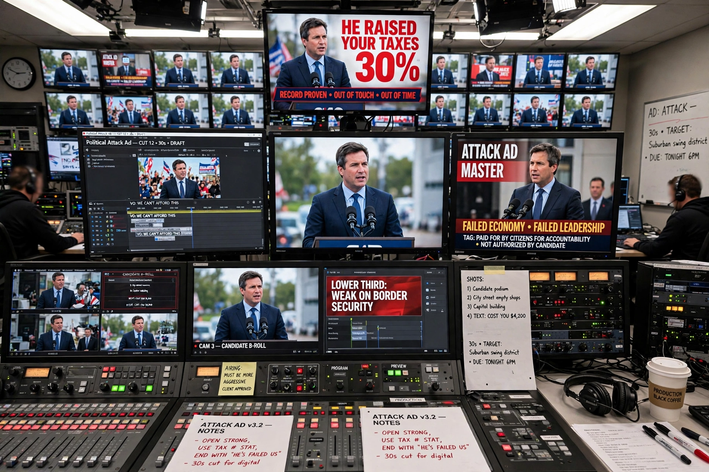

Super PACs, officially known as independent expenditure-only political committees, are a type of political action committee in the United States that may raise unlimited sums of money from corporations, unions, associations and individuals, and spend unlimited sums to advocate for or against political candidates. Unlike traditional PACs, Super PACs may not contribute directly to candidates or parties, and — in law, if not always in practice — may not coordinate their spending with the candidates they support.

Super PACs emerged from two 2010 decisions: the Supreme Court's ruling in Citizens United v. FEC, which held that corporations and unions could spend unlimited amounts on independent election advocacy, and SpeechNow.org v. FEC in the D.C. Circuit, which extended the logic to contributions to independent-expenditure-only groups. The FEC then permitted such committees, and hundreds registered within two years.
Super PACs such as Restore Our Future (pro-Romney, 2012), Priorities USA Action (pro-Obama, later pro-Clinton), and single-candidate groups run by candidates' former aides have channelled billions of dollars into federal elections. Although they must disclose donors, they may accept money from non-profit affiliates that do not — a route for "dark money". Critics argue Super PACs give wealthy donors outsized influence and that the ban on coordination is routinely skirted through public signals and shared vendors; supporters defend them as vehicles for constitutionally protected speech.
See also: Political action committee · 527 organization · Political funding